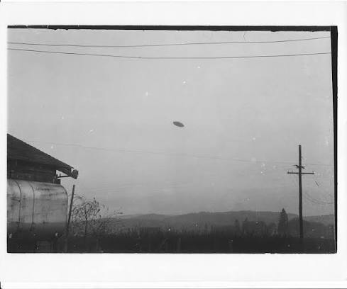

РАССЕКРЕЧЕНО // ДОСТУП 3-ГО УРОВНЯ
Дело № 42: Сводное расследование аномалий
Настоящее досье аккумулирует свидетельства событий, произошедших под юрисдикцией Правительства США и кураторством группы Majestic-12. Наведите курсор на зачеркнутые фрагменты текста для дешифровки данных.

«Они заставили нас подписать соглашение о неразглашении прямо на обломках аппарата...» — Из показаний майора Марсела, 1947 г.
Для ознакомления со сводной статистикой перейдите в реестр уровней секретности или откройте материалы дел.